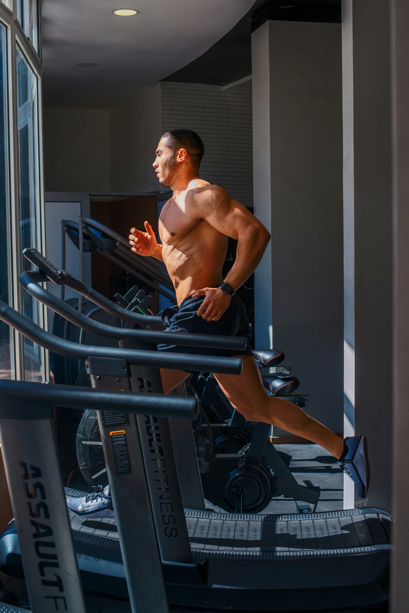

Sleep
Quality sleep helps your body recover, supports concentration, and contributes to overall health.
Learn About SleepSTART YOUR JOURNEY
Living a healthy lifestyle involves more than exercising and eating nutritious meals. Sleep, hydration, recovery, stress management, and everyday habits all play important roles in your physical and mental well-being.
At Fitness Unity, we believe lasting progress comes from creating a balanced routine that works for your lifestyle. Explore the habits that can help improve your energy, fitness, recovery, and overall quality of life.
Quality sleep helps your body recover, supports concentration, and contributes to overall health.
Learn About SleepStaying hydrated supports normal body temperature, joint function, and physical performance.
Learn About HydrationAllowing your body time to recover can help you maintain consistent training and manage fatigue.
Learn About RecoveryRegular cardiovascular activity supports heart health, endurance, and everyday physical fitness.
Explore CardioManaging stress and creating time to relax are important parts of maintaining a balanced lifestyle.
Learn MoreSmall, consistent choices can gradually improve your health and daily routines.
Build Better HabitsSleep is essential for physical and mental health. Your body uses sleep to support recovery, memory, normal immune function, and many other important processes.
Most adults between ages 18 and 60 should aim for at least 7 hours of sleep per night. Individual sleep needs can vary.
Sleep Tip: Focus on both the amount and quality of your sleep. Feeling consistently exhausted despite enough time in bed may be a reason to speak with a healthcare professional.
Water helps regulate body temperature, supports normal digestion, and allows your body to perform many essential functions. Drinking enough fluids is especially important during exercise and hot weather.
Fluid needs depend on activity, weather, body size, health, and other factors. There is no single water target that works perfectly for everyone.
Hydration Tip: Plain water is an excellent everyday drink. Longer or very sweaty activities may also require replacing electrolytes lost through sweat.
Recovery is an important part of exercise. Training challenges your muscles, while adequate recovery allows you to adapt and prepare for future workouts.
Schedule easier days or rest days when needed, especially after demanding training sessions.
Light walking, easy cycling, or gentle movement can help you stay active on recovery days.
Gentle stretching and mobility exercises can help maintain comfortable movement.
Recovery Tip: You do not need to train intensely every day to make progress. Adjust your routine when your body needs additional recovery.

Cardiovascular exercise includes activities that raise your heart rate and challenge your heart and lungs. Regular aerobic activity can improve endurance, support cardiovascular health, and benefit mental well-being.
A beginner-friendly activity that can be incorporated into everyday routines.
Running can improve cardiovascular endurance. Beginners can alternate walking and jogging.
Cycling provides aerobic exercise and can be performed outdoors or on a stationary bicycle.
Swimming works multiple muscle groups while providing an effective aerobic workout.
General guidelines recommend that adults work toward at least 150 minutes of moderate-intensity aerobic activity each week, along with muscle-strengthening activities on at least two days.
Beginners can start with shorter sessions and gradually increase their activity over time. Even small amounts of movement can provide health benefits.
| Day | Activity | Duration |
|---|---|---|
| Monday | Brisk Walking | 30 Minutes |
| Tuesday | Easy Cycling | 30 Minutes |
| Wednesday | Brisk Walking | 30 Minutes |
| Thursday | Rest or Light Movement | Optional |
| Friday | Brisk Walking | 30 Minutes |
| Saturday | Easy Cycling | 30 Minutes |
| Sunday | Rest | - |
Cardio Tip: Choose activities you enjoy. Consistent exercise is easier when your routine fits your lifestyle.
Mental wellness is another important component of a healthy lifestyle. Stress can affect sleep, concentration, energy, and daily habits.
Creating time for relaxation and activities you enjoy can help you maintain balance while working toward fitness goals.
Wellness Tip: Fitness should improve your quality of life, not become another source of constant pressure.
Healthy living does not require a perfect routine. Small improvements repeated consistently can make a meaningful difference over time.
Use this simple checklist as a reminder of habits that support a balanced day.
Habit Tip: The checklist is a daily reminder, not a test. Your progress does not depend on completing every item perfectly.
Creating healthier habits takes time. Try to make gradual changes that fit your goals, schedule, and lifestyle.